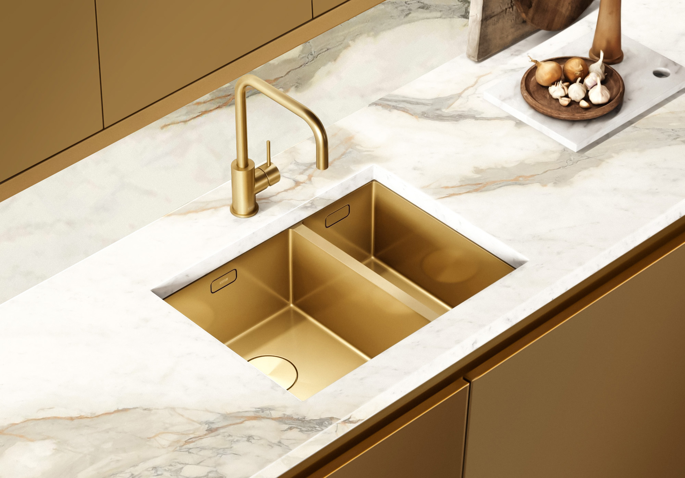

Fitted wardrobes
Full-height storage integrated into the proportions of the room, with internal layouts considered around your everyday use.
Wardrobes and dressing rooms designed around your clothes, your rituals and the architecture of your home.
Discuss your project ↗
A wardrobe should do more than hold what you own. It should make the room calmer, the everyday easier and the architecture feel resolved.
We develop considered storage for bedrooms, dressing rooms and the spaces between them, with each decision shaped by the room and the way it is used.
See the process ↘From a quiet run of fitted wardrobes to a complete dressing room, the scope begins with what the space needs to do.
Full-height storage integrated into the proportions of the room, with internal layouts considered around your everyday use.
A more immersive arrangement of hanging, drawers and display, planned as part of the wider interior.
Joinery that connects bedrooms, dressing areas and circulation spaces without asking for attention.

Doors, reveals, handles and internal divisions are resolved together, so the finished joinery feels calm from the room and useful up close.
Tell us about your space ↗We start with the room, the routine and the decisions that matter. The next step is shaped around the information available at the beginning of your project.
We review the space, your brief and the practical priorities before suggesting a direction.
Layouts, materials and internal arrangements are developed into a clear scope for discussion.
Once the scope is agreed, the next steps for production, coordination or installation are confirmed.
Practical answers depend on the room, location and scope. Start with a brief and we can establish what is possible.
Yes. Tell us about the room, the dimensions and what you need it to hold. We can then discuss the most appropriate direction.
Yes. We can discuss the project with your wider design team and clarify the joinery scope at the appropriate stage.
Our studios are based in London and Dubai. If your project is elsewhere, include the location in your enquiry and we will let you know what may be possible.
A location, a short description of the space and what you would like to achieve is a useful place to start.
Tell us about your wardrobe, dressing room or storage project. We will review the brief and reply with a considered next step.